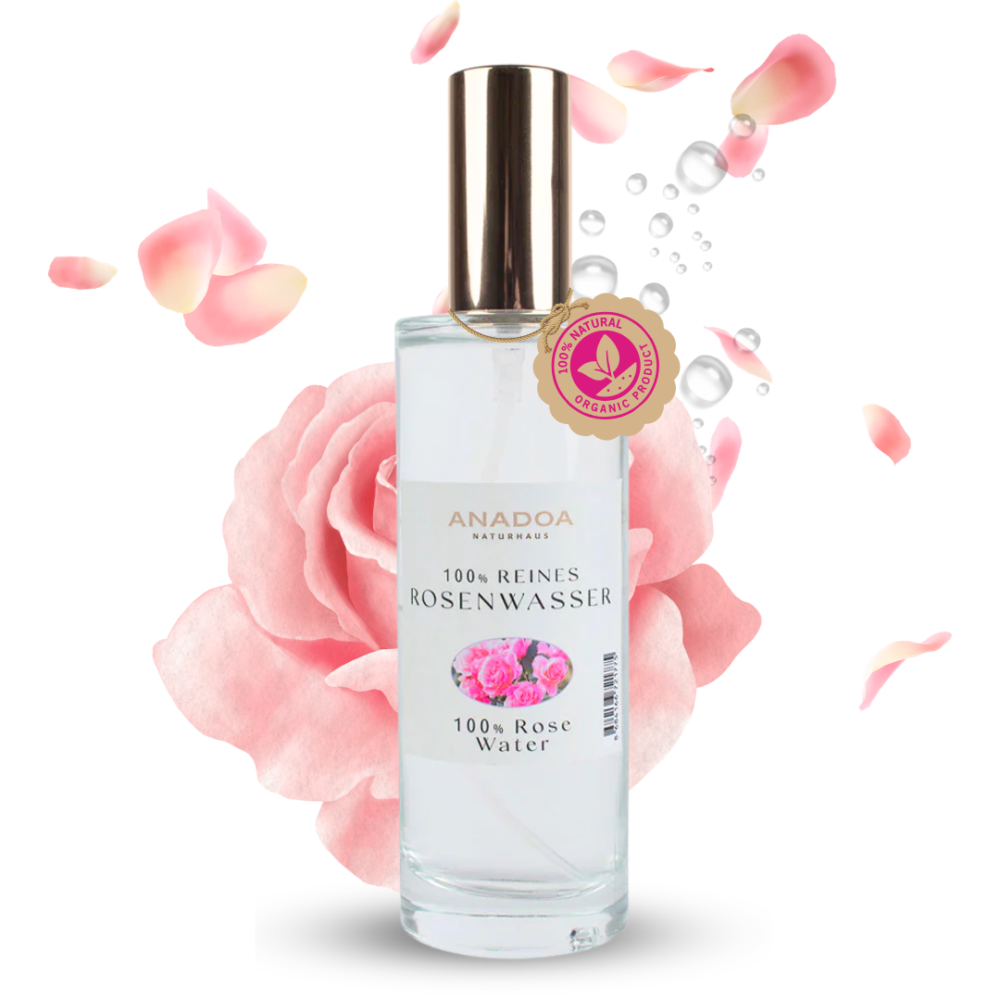

100% naturreines Hydrolat aus zartesten Damaszener Rosen. Ausgleichend, aknebekämpfend und tief hydratisierend – in der edlen Glas-Sprühflasche.
100% Naturreine Dampfdestillation.
Unser Anadoa Rosenwasser (türkisch "Gül Suyu") wird aus den berühmten Damaszener Rosen (Rosa damascena) gewonnen, die in den sonnenverwöhnten, hochgelegenen Gärten von Isparta in Anatolien blühen. Die Ernte erfolgt in traditioneller Handarbeit ausschließlich im Mai und Juni, in den frühen Morgenstunden vor Sonnenaufgang, wenn der Tau noch auf den Blüten liegt und der Gehalt an ätherischen Ölen sein Maximum erreicht. Das macht dieses Hydrolat zu einem wahren Schatz der anatolischen Natur.
Im Gegensatz zu industriellem Rosenwasser, das oft nur ein synthetisch parfümiertes Wasser oder ein Abfallprodukt der Ölindustrie ist, wird unser Rosenwasser durch die traditionelle Wasserdampfdestillation in Kupferkesseln gewonnen. Dabei trennen wir das wertvolle Rosenöl nicht ab: Jeder Sprühstoß unseres reinen Hydrolats enthält die wasserlöslichen Nährstoffe der Blüte sowie feinste, schwebende Moleküle des echten Rosenöls, die der Haut intensive Vitalität spenden.
Dank der hohen Konzentration an natürlichen Antioxidantien, Flavonoiden und den Vitaminen B, C und E schützt unser Rosenwasser die Haut effektiv vor freien Radikalen und oxidativem Stress. Es stärkt die hauteigene Kollagenstruktur, fördert die Zellerneuerung und verfeinert Linien und Fältchen – für einen jugendlichen, strahlenden Teint (Glow-Effekt).
Viele Gesichtswässer basieren auf billigem Alkohol, der die Hautbarriere stört, das Mikrobiom angreift und die Haut langfristig austrocknet. Das Anadoa Rosenwasser ist absolut rein und unverdünnt. Es reguliert den natürlichen pH-Wert der Haut nach der Reinigung, klärt sanft verstopfte Poren und beruhigt Rötungen oder Irritationen (auch ideal nach der Rasur oder bei Sonnenbrand).
Stellt den natürlichen Säureschutzmantel der Haut nach der Reinigung wieder her und beugt öligem Glanz vor. Ideal auch als vorbereitendes Gesichtswasser vor Pflegeölen.
Wirkt von Natur aus intensiv antibakteriell und entzündungshemmend. Reduziert Rötungen, beruhigt entzündete Pickel sanft und beugt neuen Unreinheiten vor.
Versorgt die obersten Hautschichten sofort mit Feuchtigkeit, polstert die Zellen optisch auf und hinterlässt ein wunderbar pralles, elastisches Hautgefühl.
Wirkt mild adstringierend (zusammenziehend) auf die Poren, reguliert die Talgproduktion und verfeinert das Hautbild für einen ebenmäßigen Teint.
Morgens und abends nach der Gesichtsreinigung 2-3 Sprühstöße direkt auf das Gesicht sprühen und sanft einklopfen, oder auf ein Wattepad sprühen und sanft über das Gesicht streichen, um Rückstände zu entfernen.
Jederzeit zwischendurch auf Gesicht und Dekolleté sprühen – ideal an heißen Tagen, bei trockener Heizungsluft im Büro oder im Flugzeug. Kann auch über das Make-up gesprüht werden, um dieses zu fixieren.
Mischen Sie unser Rosenwasser anstelle von Leitungswasser mit unserer gelben oder grünen Tonerde. Die Kombination verstärkt die klärende und beruhigende Wirkung der Maske um ein Vielfaches.
Sprühen Sie das gekühlte Rosenwasser auf zwei Wattepads und legen Sie diese für 5-10 Minuten auf Ihre geschlossenen Augen. Mildert Schwellungen und dunkle Augenringe sofort ab.
Ja, absolut. Unser Rosenwasser ist 100% naturrein und enthält keinen Alkohol, künstliche Konservierungsstoffe oder synthetische Zusätze. Es ist extrem mild, beruhigt gereizte Haut und kann auch hervorragend bei Neurodermitis, Couperose und Rosazea angewendet werden.
Lagern Sie das Hydrolat an einem kühlen, lichtgeschützten Ort, idealerweise unter 20°C. Für einen extra kühlenden und abschwellenden Frische-Kick (besonders bei müden Augen am Morgen) empfehlen wir die Aufbewahrung im Kühlschrank.
Ja. Rosenwasser spendet trockenem und sprödem Haar Feuchtigkeit, beruhigt juckende Kopfhaut und verleiht dem Haar einen gesunden, natürlichen Glanz sowie einen zarten Rosenduft. Sprühen Sie es einfach nach dem Waschen ins feuchte Haar.
Viele günstige Gesichtswässer sind parfümiertes Wasser mit zugesetztem Alkohol oder Konservierungsmitteln. Unser Rosenwasser ist ein 100% reines Hydrolat, bei dem das kostbare ätherische Rosenöl bei der Destillation nicht entzogen wurde, sodass alle Wirkstoffe voll erhalten bleiben.
Ja, Rosenwasser wirkt auf natürliche Weise antibakteriell und entzündungshemmend. Es bekämpft Aknebakterien, reinigt verstopfte Poren sanft, lindert schmerzhafte Schwellungen und hilft der Haut, sich schneller zu regenerieren.